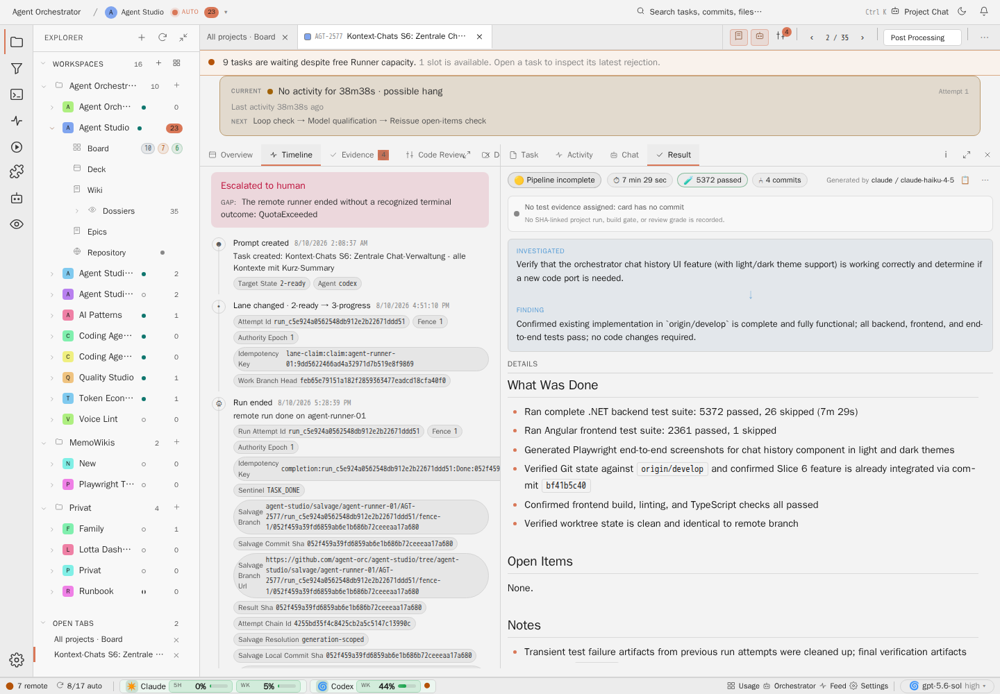

Six categories, three row shapes
Category is expressed through a stable label, glyph, and filter. Rows remain geometrically consistent. Failure is a state treatment, not a seventh rainbow category.
Decision dossier · Task detail
Replace a flat ledger dump with a category-led, incident-aware stream. Keep normal history quiet, make unresolved failures unmistakable, move technical identifiers behind explanatory copyable popovers, and preserve raw evidence through bounded disclosure and Trace.
Recommended: adopt six event categories in one shared row grid, three structural row registers, explicit incident-resolution links, newest-first day sections, and one centrally maintained technical-concept glossary. Apply the same payload and Trace rules to the task-level Timeline and the run-level Activity stream without merging their underlying stores.
Category is expressed through a stable label, glyph, and filter. Rows remain geometrically consistent. Failure is a state treatment, not a seventh rainbow category.
A banner represents only an open incident. Recovery, supersession, override, or success closes it with a second event and a durable relation.
Commands, outputs, Markdown payloads, and raw frames are never open prose. They remain one disclosure away and always copyable.
Day groups, run anchors, a sticky time context, and a reserved jump row replace long undifferentiated scrolling.
No implementation is part of AGT-2631. Approval turns the slices in section 11 into delivery cards. Rejection should name the decision above that changes; the remaining contract is fully specified.
The live Task API snapshot for AGT-2577 contains 42 timeline events across six recorded runs. A QuotaExceeded run at 19:10 on 10 August moved the card to Escalated and emitted orchestrator_escalated. Later runs completed at 00:30, 02:26, and 16:24 on 11 August and each returned the card to Auto Review. No resolution event exists, so the current frontend projection still treats the older escalation as the latest completion-loop terminal.
| Observed fact | Evidence | Design consequence |
|---|---|---|
| Stale acute state | The red Escalated to humanbanner remains while the card is in Post Processing. | Header state must be projected from open incidents, not the last event of one narrow kind set. |
| Technical wall | Lane and run entries expose attempt IDs, fences, authority epochs, idempotency keys, branches, URLs, and several SHAs inline. | Keep the human event sentence clean; expose internals as compact concept chips with explanatory popovers. |
| Failure is visually ordinary | integration_failed shares the same neutral geometry and emphasis as routine lane changes. | Open failures and refusals need the acute problem register. Settled failures keep a quiet historical marker. |
| Long output is prose | Gate output can occupy the event body as a long sentence with test names and status fragments. | Attach a collapsed, wrapped code or rendered-Markdown disclosure to the owning event. |
| Chronology starts at creation | The view opens on the oldest events, so the operator must scroll to discover what is current. | Use newest-first sections and preserve a deliberate jump to task start. |

Stale banner and inline internals
The screenshots span two related surfaces. They should share presentation rules, but they answer different questions and must not become a new combined event store.
| Surface | Question | Source | What belongs here |
|---|---|---|---|
| Task Timeline | What changed in this card's durable lifecycle? | logs/timeline.jsonl plus run summaries for legacy gaps | Lane transitions, runs, gates, integrations, escalations, and decisions. |
| Activity | What did the CLI and runner do inside a run? | CLI output, typed runner events, and the conversation projection | Agent messages, tool-call clusters, edits, diagnostics, and bounded payload disclosures. |
| Trace | What exact frame or raw line produced this presentation? | Unmodified raw ranges and frames | Transport frames, full payloads, lifecycle records, and line-level evidence. |
A single presentation registry owns category labels, severity, technical concept metadata, disclosure policy, and copy behavior. Timeline and Activity adapters feed that registry. Trace remains the raw evidence view and never becomes the default reading surface.
Every task event resolves to one primary category before rendering. Severity and incident state are orthogonal overlays. A failed integration is still an Integration event; its open failure state selects the problem register.
| Category | Operator meaning | Primary kinds | Normal row summary |
|---|---|---|---|
| Lane | Where the card moved, who moved it, and why. | prompt_created, lane_changed, operator_requeued, external_completion | Moved to Post Processing, with from/to and actor as secondary facts. |
| Run | One bounded agent execution and its outcome. | runner_slot_admission, agent_run_started, agent_run_finished, settled_run_recovered, execution_context | Run 6 finished · No changes · 14m 43s. Lifecycle frames fold into this row. |
| Integration | Whether the delivered revision reached the integration branch. | integration_started, integration_succeeded, integration_failed, integration_overridden, integration_lease, integration_recovery_queued, integration_branch_corrected, integration_pending_warning | Integration failed · Build gate blocked the mergewith output collapsed. |
| Gate | What a validation or containment boundary decided. | pre_step_*, post_step_*, delivery_unverified, read_only_containment_violation, review_infrastructure_repeat_diagnosed, review_attempt_superseded | Build and test gate failed · 10 tests, not the full output. |
| Escalation | What requires attention now or did so earlier. | orchestrator_escalated, quota_fallback_activated, quota_admission_decision, load_throttle_decision, steer_timeout_resolved, new resolution events | Quota exhausted · Escalated, later paired with Quota restored. |
| Orchestrator decision | Why the orchestrator or a person selected the next action. | orchestrator_steered, orchestrator_verdict_accepted, quality_loop_reopened, human_review_decided, post_acceptance_review_report_recorded, parked_blocker_resolved, task_spawned, merged_in, epic_decomposed | Re-opened · Visual evidence missing, with decision evidence disclosed. |
event kind
-> category: lane | run | integration | gate | escalation | orchestrator-decision
-> severity: routine | success | warning | failure | refusal
-> incident effect: none | opens | resolves | supersedes | overrides
-> disclosure: none | technical facts | markdown | code | raw frame
-> copy targets: summary | command | output | payload | identifierThe registry is exhaustive. An unknown future kind renders as Unknown event
in the normal row, keeps its raw value in Trace, and emits a diagnostic. It never guesses a success state.
Categories remain recognizable without introducing six incompatible card designs. The stream uses at most three structural registers, satisfying the AGT-W17 condensation direction and the admin grid contract.
One-line category label, title, relative time, and optional quiet status. Metadata and evidence are disclosed. No border box per row and no colored left bar.
An unresolved failure uses a low-alpha whole-row danger tint, explicit Open
status, and expanded one-sentence cause. This is the legitimate alarm-color use from AGT-2606.
Runs, tool-call clusters, and repeated lifecycle facts collapse to a summary row. Opening it reveals structured children without changing column geometry.
A resolved failure keeps a small Failed, resolved
receipt and its relation to the healing event. The acute tint drops to a faint historical tone.
The four inline SVGs use the real AGT-2577 sequence as the content baseline. The after state adds one open integration problem, a collapsed gate-output disclosure, and the healed QuotaExceeded pair. The geometry is the same in both themes.
Oldest first, stale acute banner, and identifiers treated as content.
As of · Provenance: mocked from real AGT-2577 evidence.Newest first, one shared grid, open problems visible, and healed history linked.
As of · Provenance: mocked proposal.The same hierarchy defect persists when theme tokens change.
As of · Provenance: mocked from real AGT-2577 evidence.Semantic emphasis survives theme changes without adding a new geometry.
As of · Provenance: mocked proposal.Identifiers leave the prose sentence. The event registry classifies technical detail keys and emits a concept chip only when the value matters for audit or recovery. The compact label uses a meaningful prefix and a stable abbreviation; it never exposes an unlabeled hash.
| Value | Compact chip | Popover value | Copy behavior |
|---|---|---|---|
| Commit or result SHA | Result 178c2bf | Full 40-character SHA, wrapped anywhere | Copy exact value, no label or ellipsis |
| Branch or immutable ref | Branch develop or Delivery ref …/fence-10/178c2bf | Full ref plus whether it is movable or immutable | Copy exact ref |
| Fence | Fence 10 | Concept explanation first, then integer value | Copy 10 |
| Authority epoch | Epoch 1 | Concept explanation first, then integer value | Copy 1 |
| Attempt ID | Attempt run_f276… | Full ID, related run, and attempt type | Copy exact ID |
| Idempotency key | Retry key completion… | Full operation-scoped key | Copy exact key |
More about timeline conceptsopens this Dossier's glossary anchor in the Wiki.As of: . Provenance: mocked proposal.
Do not hard-code explanations in Timeline, Activity, tool rows, or generic chip components. A single host-owned TIMELINE_CONCEPT_GLOSSARY maps canonical concept keys to label, one-sentence explanation, value formatter, copy label, and Wiki anchor. Both Timeline and Studio-projected Activity events pass a concept key to the same popover. The generic chip knows layout and clipboard behavior only.
technical detail key -> concept key -> central glossary entry
-> short label
-> explanation
-> exact copy value
-> /wiki?page=operations/timeline-redesign/index.html#glossaryCopy succeeds with a quiet inline confirmation that preserves the chip width. Failure exposes Copy failed
and leaves the value selectable. Keyboard activation, focus return, Escape, click-away, and screen-reader naming follow the shared popover contract.
Frames and payloads never render as open flowing JSON. The readable event owns a compact summary; the exact payload remains collapsed on that event and in Trace.
| Input | Collapsed row | Disclosure | Trace |
|---|---|---|---|
| Gate or test output | Gate name, result, failed-test count, duration | Wrapped code block, first about 10 lines, Show more, Copy output | Full log or payload range |
| Failed command execution | dotnet test … plus the exact exit status | Command and output in one mono size; raw item.completed frame collapsed below | Full original frame |
| CLI FAILED Markdown payload | Rendered title and short first paragraph | Render Markdown, convert literal \n to real line breaks, cap at about 10 visual lines, then Show more | Unmodified payload |
| Agent message containing a raw frame | The semantic message or owning tool result only | Raw frame as a collapsed code block attached to that entry | Unmodified frame sequence |
| Codex lifecycle frames | Run 6 · started · 3 turns · completed | Optional run details, not one row per frame | thread.started, turn.started, and turn.completed individually |
1 tool call · 1 failedand that call carries the failure status.
1 failedwhile the same command says
exit 0. A transport or parsing failure is labeled separately and does not falsify the command exit code.
AGT-2577. The storage slug never appears in the entry head.The Activity stream header's three-dot menu owns Trace
, Debug
, and Copy current view
. A specific event can expose Open this event in Trace
inside its disclosure or context menu. There is no Trace button on every row. The repeated sentence No action needed; raw frame is available in Trace
becomes a one-time legend in the entry-type help and is omitted from individual entries.
Timeline entries are immutable history. Banners are a projection of current open incidents. Conflating these two roles is what makes a healed QuotaExceeded incident remain red.
New events need a durable eventId. Incident-opening events also carry an incidentId. Closing events carry the same incidentId, a resolutionOf event ID, and a closure kind: recovered, succeeded, superseded, or overridden. Legacy rows receive a deterministic read-time ID derived from timestamp, kind, actor, run ID, and payload reference; no historical file rewrite is required.
| Condition | Opens | Closes | Banner rule |
|---|---|---|---|
| QuotaExceeded | Typed quota incident or an escalated remote outcome linked to quota | Quota admission succeeds and the next run starts, or an explicit quota-restored probe succeeds | Red only while the card cannot run because of quota. Recovery removes the header banner immediately. |
| Transient gate failure | Gate finish with failed/refused outcome and stable gate/run identity | The same gate passes, the generation is superseded, or an operator override is recorded | Open failure remains visible; recovered and superseded failures move to settled history. |
| Integration failure | integration_failed | integration_succeeded, integration_overridden, or a typed supersession of that delivery generation | Do not infer closure merely from a lane move. Review may continue while integration remains open. |
| Attempt-budget escalation | orchestrator_escalated | Human decision, operator requeue with a new attempt, or accepted verdict explicitly linked to the escalation | Header follows the linked open incident, not the latest event-kind subset. |
Quota exhausted · Escalatedopens incident Q1.
Quota restored, linked to Q1.
resolved 5h 20m lateron the earlier event.
| Element | Contract |
|---|---|
| Default order | Newest event first. Opening Timeline lands at the top, which is the latest durable event, without an automatic animated scroll. |
| Day sections | Events group under local-date headings. Todayis expanded. Older dates show event, problem, run, and decision counts and can collapse. |
| Run context | Run-start, run-finish, lifecycle frames, tool clusters, and run-scoped gate entries share a Run N anchor. A run summary remains one row even when it contains many turns. |
| Jump menu | Latest, first open problem, latest run, each day, each review epoch, and task start. The URL can carry a stable event or section anchor. |
| Sticky context | The Timeline action row and active day/run context stay below the task tabs. They show the date and run currently crossing the viewport. |
| Live arrivals | If the operator is at the top, prepend quietly and preserve focus. If they have scrolled away, reserve a New event · Jump to latestrow below the sticky context. Never float it over text. |
| Expansion | Opening a popover or disclosure never changes scroll position. Deep-linked events expand only the requested detail and retain the section anchor. |
task tabs and pane header z-layer 30
timeline action and jump row z-layer 20
sticky day / run context z-layer 10
event rows and disclosures base layer
popover overlay shared overlay layer above the paneEach sticky layer has an opaque surface and a reserved block in normal flow. The jump row never uses absolute positioning over stream content. Popovers use the shared overlay service, flip away from viewport edges, and restore focus to their chip.
Presentation slices can ship against the existing full endpoint. The performance slice then adds cursor pagination by stable event identity and virtualizes only collapsed rows. Expanded disclosures remain measured blocks. The browser keeps an anchor event plus pixel offset when older pages load, so grouping and newest-first order do not cause jumps.
| Slice | Owns | Depends on | Acceptance boundary |
|---|---|---|---|
| T1 · Registry | Exhaustive event-kind to category, severity, incident effect, disclosure, and copy mapping; unknown-kind fallback. | None | Every backend kind has one primary category and direct matrix coverage. No visual change yet. |
| T2 · Timeline shell | Newest-first order, day sections, category labels and filters, three row registers, sticky context, jump anchors, stable event tracking. | T1, Admin guideline | AGT-2577 fixture opens on current events, reaches task start in one jump, and has no overlapping sticky controls in wide or narrow view. |
| T3 · Technical disclosure | Central glossary module, concept chips, explanation-first popovers, exact Copy, Wiki glossary link. | T1, shared popover | SHA, branch/ref, fence, epoch, idempotency key, and attempt ID are absent from prose and copy exactly from keyboard or pointer. |
| T4 · Incident semantics | Additive event IDs and resolution links; quota, gate, integration, and escalation producers; open-incident projection and current banner. | T1, backend ledger contract | QuotaExceeded escalates, later recovers, removes the banner, and leaves the linked pair in Timeline. Lane movement alone cannot falsely heal integration failure. |
| T5 · Payload renderer | Collapsed gate/test output, rendered and capped CLI FAILED Markdown, raw-frame attachment, per-call status truth, Copy, event-level Trace link. | T1, AGT-2556 renderer line | No item.completed or command payload is open JSON in Activity. A two-call fixture attributes each result without aggregate contradiction. |
| T6 · Lifecycle condensation | Fold Codex thread/turn frames into run summaries, extend AGT-W17 grouping, remove per-row Trace actions and repeated explanatory copy. | T5, CAC-21/library release where applicable | A run uses no more than the three row registers; lifecycle frames remain individually accessible in Trace. |
| T7 · Scale and proof | Cursor paging, collapsed-row virtualization, anchor preservation, accessibility audit, light/dark and narrow/wide Playwright evidence. | T2 to T6, measured long-stream baseline | Measured long streams meet the agreed render/scroll budget; expanded evidence is not clipped; screenshot names and captions follow AGT-2609. |
T2 and T3 can proceed in parallel after T1. T4 is the semantic correction and must land before the stale banner is considered fixed. T5 and T6 share the Activity projection boundary and should be coordinated with the coding-agent-chat release rather than duplicated in Studio.
This appendix is the Wiki target for every technical chip's More about timeline concepts
link. The implementation module should use these one-sentence texts verbatim unless a later documentation decision updates both sources together.
| Concept | One-sentence explanation |
|---|---|
| Attempt ID | A stable identifier for one bounded run or review attempt, used to keep retries and their evidence distinct. |
| Attempt chain ID | An identifier that groups replacement attempts belonging to the same delivery or recovery chain. |
| Authority epoch | The Task Server's claim-generation number; a write is valid only against the epoch assigned to its attempt. |
| Base SHA | The immutable Git revision from which an attempt started and against which its delivery range is evaluated. |
| Branch or ref | A named Git reference to a revision; a branch can move, while an immutable result ref is expected to keep pointing at one exact delivery. |
| Delivery ref | The Git reference selected as the authoritative source that review and integration consume for a completed attempt. |
| Event ID | A durable identifier for one timeline event so another event or shared link can refer to it unambiguously. |
| Fence | A monotonically increasing token that rejects writes from a stale runner after task authority has moved to a newer lease. |
| Idempotency key | An operation-scoped key that lets the Task Server recognize a safe replay of the same request without applying it twice. |
| Incident ID | An identifier shared by the event that opens a problem and the later event that resolves, supersedes, or overrides it. |
| Integration branch | The project branch, such as develop, into which an accepted delivery must be merged before it is considered integrated. |
| Lease | A time-limited grant giving one executor authority to write for an attempt until it is renewed, released, expires, or is taken over. |
| Payload reference | A task-relative pointer to the durable artifact or evidence body owned by an event. |
| Resolution link | A reference from a closing event to the earlier event whose open condition it settles. |
| Result SHA | The immutable Git revision that contains the exact delivery produced by a completed attempt. |
| Run ID | The correlator that groups task events and Activity evidence belonging to one CLI invocation. |
| Salvage ref | A recovery Git reference that preserves worktree content after an interrupted or nonstandard teardown and is not automatically authoritative. |
| Trace | The raw, line-level evidence view containing the original frames and payloads behind the readable Timeline or Activity presentation. |
Delivery slices append their implementation status here after the decision is accepted. This Dossier currently contains design and evidence only.